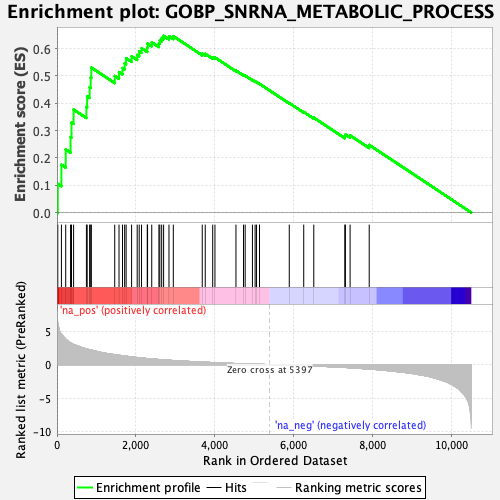
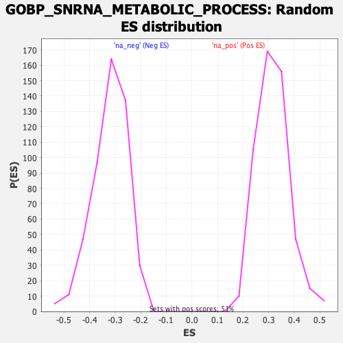

| Dataset | qlf.KOd4vsWTd4_gsea_score |
| Phenotype | NoPhenotypeAvailable |
| Upregulated in class | na_pos |
| GeneSet | GOBP_SNRNA_METABOLIC_PROCESS |
| Enrichment Score (ES) | 0.6461164 |
| Normalized Enrichment Score (NES) | 2.0396287 |
| Nominal p-value | 0.0 |
| FDR q-value | 3.574861E-4 |
| FWER p-Value | 0.038 |

| SYMBOL | RANK IN GENE LIST | RANK METRIC SCORE | RUNNING ES | CORE ENRICHMENT | |
|---|---|---|---|---|---|
| 1 | NHP2 | 20 | 6.137 | 0.1052 | Yes |
| 2 | DKC1 | 112 | 4.505 | 0.1751 | Yes |
| 3 | METTL16 | 221 | 3.786 | 0.2308 | Yes |
| 4 | EXOSC7 | 344 | 3.257 | 0.2760 | Yes |
| 5 | EXOSC2 | 368 | 3.180 | 0.3293 | Yes |
| 6 | ELL2 | 421 | 3.014 | 0.3769 | Yes |
| 7 | INTS2 | 746 | 2.335 | 0.3867 | Yes |
| 8 | CDK7 | 765 | 2.302 | 0.4252 | Yes |
| 9 | ICE1 | 827 | 2.224 | 0.4581 | Yes |
| 10 | ZC3H8 | 855 | 2.190 | 0.4938 | Yes |
| 11 | EXOSC4 | 871 | 2.169 | 0.5302 | Yes |
| 12 | TUT1 | 1464 | 1.488 | 0.4996 | Yes |
| 13 | NOP10 | 1573 | 1.397 | 0.5136 | Yes |
| 14 | EXOSC3 | 1661 | 1.327 | 0.5285 | Yes |
| 15 | EXOSC5 | 1716 | 1.290 | 0.5458 | Yes |
| 16 | EXOSC9 | 1753 | 1.263 | 0.5644 | Yes |
| 17 | INTS8 | 1892 | 1.158 | 0.5714 | Yes |
| 18 | RBM7 | 2034 | 1.052 | 0.5763 | Yes |
| 19 | EXOSC8 | 2085 | 1.018 | 0.5893 | Yes |
| 20 | ICE2 | 2144 | 0.987 | 0.6010 | Yes |
| 21 | METTL4 | 2289 | 0.901 | 0.6029 | Yes |
| 22 | EXOSC10 | 2297 | 0.896 | 0.6179 | Yes |
| 23 | INTS5 | 2403 | 0.852 | 0.6227 | Yes |
| 24 | USPL1 | 2585 | 0.763 | 0.6187 | Yes |
| 25 | SNAPC3 | 2608 | 0.755 | 0.6298 | Yes |
| 26 | SNAPC4 | 2655 | 0.737 | 0.6382 | Yes |
| 27 | USB1 | 2704 | 0.714 | 0.6461 | Yes |
| 28 | INTS3 | 2840 | 0.656 | 0.6447 | No |
| 29 | INTS4 | 2950 | 0.613 | 0.6449 | No |
| 30 | ELL3 | 3684 | 0.373 | 0.5814 | No |
| 31 | LARP7 | 3760 | 0.354 | 0.5804 | No |
| 32 | INTS7 | 3949 | 0.303 | 0.5677 | No |
| 33 | EXOSC6 | 4006 | 0.287 | 0.5674 | No |
| 34 | SNAPC1 | 4539 | 0.157 | 0.5193 | No |
| 35 | INTS12 | 4731 | 0.117 | 0.5030 | No |
| 36 | RPAP2 | 4773 | 0.111 | 0.5011 | No |
| 37 | MEPCE | 4957 | 0.078 | 0.4849 | No |
| 38 | TOE1 | 5025 | 0.065 | 0.4797 | No |
| 39 | INTS9 | 5061 | 0.060 | 0.4774 | No |
| 40 | INTS10 | 5136 | 0.045 | 0.4711 | No |
| 41 | ZCCHC8 | 5891 | -0.078 | 0.4004 | No |
| 42 | SNAPC2 | 6258 | -0.147 | 0.3679 | No |
| 43 | SNAPC5 | 6513 | -0.203 | 0.3472 | No |
| 44 | CC2D1A | 7300 | -0.418 | 0.2794 | No |
| 45 | ELL | 7315 | -0.422 | 0.2854 | No |
| 46 | INTS6 | 7434 | -0.463 | 0.2822 | No |
| 47 | INTS1 | 7919 | -0.661 | 0.2475 | No |
